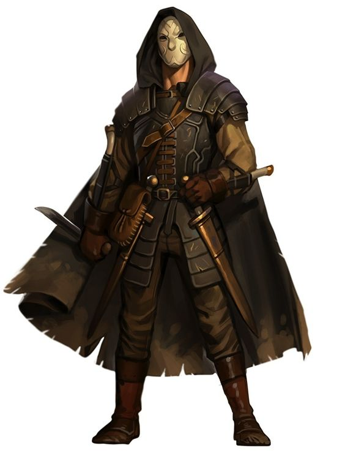

Sinalizando para seus companheiros esperarem, uma halfling esgueira-se à frente pelo corredor da masmorra.
Ela encosta seus ouvidos na porta, puxa suas ferramentas e abre a fechadura em um piscar de olhos.
Ela então desaparece nas sombras, ao mesmo tempo em que seu companheiro guerreiro se move para abrir a porta com um chute.
Uma humana espreita nas sombras de um beco, enquanto seu cúmplice se prepara para a parte dele na emboscada.
Quando seu alvo – um notório traficante de escravos – passa pelo beco, seu cúmplice grita, o traficante de escravos vem investigar e a
lâmina da assassina corta sua garganta antes mesmo dele ser capaz de emitir qualquer som. Disfarçando uma risadinha,
uma gnoma agita seus dedos e magicamente surrupia o molho de chaves do cinto do guarda. No momento seguinte, as chaves estão em suas mãos,
a porta da cela está aberta e ela e seus companheiros estão livres para escapar. Ladinos contam com sua perícia,
furtividade e as vulnerabilidades de seus inimigos para obter vantagem em qualquer situação.
Eles possuem uma habilidade especial para encontrar a solução para praticamente qualquer problema,
demonstrando desenvoltura e versatilidade, a chave de qualquer grupo aventureiro de sucesso.
PERÍCIA E PRECISÃO
Ladinos dedicam muito de seus recursos para se tornarem mestres em várias perícias, bem como aperfeiçoar suas habilidades em combate,
adquirindo uma vasta experiência que poucos personagens podem alcançar. Muitos ladinos focam na furtividade e trapaça, enquanto outros
refinam suas perícias para ajudá-los nas masmorras, como escalada, encontrar e desarmar armadilhas, e abrir fechaduras. Em combate,
ladinos priorizam astúcia em vez de força bruta. O ladino sempre prefere desferir um ataque preciso, bem naquele lugar que mais machuca,
do que derrubar um oponente com uma série de ataques. Ladinos possuem uma habilidade quase sobrenatural de evitar o perigo,
e alguns poucos aprendem truques de magia para incrementar suas outras habilidades.
VIVENDO ÀS SOMBRAS
Cada cidade, cada distrito tem sua parcela de ladinos. A maioria deles vive o pior estereótipo da classe, levando a vida como assaltantes,
assassinos, ladrões de rua ou vigaristas. Geralmente, esses canalhas são organizados em guildas de ladrões ou famílias criminosas.
A maior parte dos ladinos opera independentemente, mas às vezes recrutam aprendizes para ajudá-los em seus golpes e
assaltos. Uma pequena parcela dos ladinos vive honestamente como chaveiros, investigadores ou exterminadores,
o que pode ser um trabalho perigoso em um mundo que ratos atrozes – e homens-rato – assombram os esgotos. Como aventureiros,
os ladinos pendem para ambos os lados da lei. Alguns são criminosos calejados que decidiram procurar sua fortuna em montes de tesouros,
enquanto outros levam uma vida de aventura para escapar da lei. Alguns aprenderam e aperfeiçoaram suas perícias
com o propósito explícito de se infiltrar em ruínas antigas e criptas escondidas na busca de tesouros.
CRIANDO UM LADINO
Conforme você cria o seu ladino, considere a relação do seu personagem com a lei.
Você tem um passado – ou presente – criminoso? Está fugindo da lei ou da fúria do mestre de sua guilda de ladrões?
Ou você deixou sua guilda em busca de mais riscos e maiores recompensas? É a ambição que o direciona em suas aventuras
ou algum outro desejo ou ideal? Qual foi o gatilho que tirou você de sua vida pregressa? Foi um grande golpe ou um roubo
terrivelmente errado que fez você reavaliar sua carreira? Talvez você teve sorte em um roubo bem sucedido e conseguiu dinheiro
suficiente para escapar da sua vida miserável. Será que a sede pela estrada finalmente chamou você para longe de seu lar?
Talvez você encontrou-se subitamente separado de sua família ou mentor, e precisou encontrar uma nova forma de sustento.
Ou talvez tenha feito um novo amigo – outro membro de seu grupo de aventureiros – que o mostrou novas possibilidades de
ganhar a vida e empregar seus talentos particulares.
Fonte: Vertente Geek